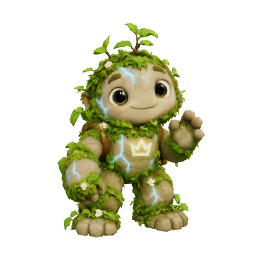

Live release verification
PR #40 merged as 79131181a7682cb7916ebf6f78aaca5e5ee7be4b from tested ebf933cef47505e13da3a3e120d855e3414992c0. Trees match 6d01211e66f277ebba66ffc029739464656d8219. Pages run 36286178336 succeeded. All 22 changed public runtime/model/portrait files match the tested bytes. Fresh 1280px and 390px public sessions verified seven portraits, no helper GLB before Continue, only chosen Moss/Spark downloaded, dialogue and reload persistence; no console/page errors. Local 88 unit/coverage and 20 distinct browser scenarios passed. Hosted CI 36286178652 completed with failure: 88 units passed and 23 browser checks passed, then the Echo scenario timed out at 180 seconds while clicking the guide cue; 97 later checks did not run. Prior main CI 36283044211 also timed out at 180 seconds in the same scenario, at its Next button. This is not an identical-click comparison or a full-CI pass. Local native-renderer Echo and public chooser/dialogue checks passed. Physical-device/student acceptance untested.
Seven helper choices — 27 September 2026
CE-CHANGE-20260927-96. Tania explicitly authorises integration and publication of Echo, Sprout, Moss, Bloom, Spark, Pax and Atlas. Crown Bot and Nova are not selectable. Based on existing live main 3681d57, preserving sharp staged entry, campus/Studio/Market preparation, original artwork and local profiles. Existing unrelated dirty night-market/game-loading edits are excluded.
Behaviour
A native accessible dialog presents seven 256px portraits rendered from the actual models. The initial choice precedes world creation; the selection screen requests no helper GLBs. Continue stores only the helper identifier under ce-helper-v1:<local-character-id>, then starts the existing playable world. Returning characters keep their choice; Your guide permits switching. Browsing cards/cancelling does not fetch models. No account, server record, learner evidence or new service is added. Choices stay on this browser/device; failed storage retains tab-only choice with a notice.
Only the selected GLB is fetched. Changing choice aborts pending fetches; stale decoded objects are disposed. Replaced meshes/materials/textures are released. A failed download or 15-second fetch timeout uses existing native Echo as a clearly labelled fallback and preserves the intended choice; continuing with that choice again retries. Failure never blocks the world. Transform bounce, sway, pulse and click attention respect reduced motion; no skeletal clips are played. Existing guide task state remains keyed to local character, independently of helper appearance.
Echo is an exact GLB export of the existing createEchoModel geometry/materials, not a redesign. Uploaded Sprout is retained byte-for-byte as sprout.glb; its existing rig and two embedded animations are not played. The five new uploads are copied byte-for-byte. Source uploads remain untouched.
Asset inspection
Sizes are decimal MB. Exact byte counts, hashes and portrait sizes: docs/production/helper-asset-metrics-20260927.json.
| Helper | MB | Triangles | Materials | Textures | Skins | Embedded animations |
|---|---|---|---|---|---|---|
| Echo | 0.142 | 4,822 | 7 | 0 | 0 | 0 |
| Sprout | 10.331 | 14,718 | 1 | 3 | 1 | 2 |
| Moss | 5.329 | 14,908 | 1 | 3 | 0 | 0 |
| Bloom | 3.600 | 14,236 | 1 | 3 | 0 | 0 |
| Spark | 4.307 | 14,555 | 1 | 3 | 0 | 0 |
| Pax | 4.005 | 14,566 | 1 | 3 | 0 | 0 |
| Atlas | 3.297 | 14,705 | 1 | 3 | 0 | 0 |
Sprout is the heavy outlier, roughly twice Moss's transfer size. No texture/geometry reduction is applied without visual evidence. Selected-only loading bounds this cost to Sprout users. The five new models fit the intended approximately 15k-triangle range. All seven portraits together are 287,754 bytes (about 288 kB); no 3D chooser previews or global model preload.
Verification and release
Initial generic local server exhausted its request backlog, causing module connection resets; switched to the repository's 128-request test server. First corrected run: five scenarios pass, covering desktop/390px chooser/world/reload, all seven models and switch/cancel, failed asset/retry, reduced motion and character isolation. Desktop/phone screenshots inspected. Final regressions, scoped package verification, commit, Pages deployment and public hashes are pending at this checkpoint. Browser emulation is not a physical-phone/student acceptance guarantee.
Existing world regression tests use helper-fixtures.js to choose Echo at the new entry gate; helper-specific tests use fresh unmodified browser contexts. This keeps previous scenarios exercising their intended world flows.
Final local verification:88unit and coverage checks;7helper browser scenarios;13Echo/staged-entry/reflection/curriculum regressions;209staged asset hashes and 52 runtime modules pass. Full npm CI passed source/package/coverage but its browser server could not bind occupied 4273. Dedicated8796 runs passed. Existing main3681d57 hosted CI 36283044211 is already failed; no full hosted pass is claimed. Seven scenarios include390×640 scrolling/keyboard/rapid-switch race and denied storage. No remaining runtime test failure. Publication and public verification follow this candidate.
Exact release files
``text AGENTS.md docs/helper-asset-metrics-20260927.json docs/helper-selector-20260927.md helper-regression.playwright.config.mjs helpers.playwright.config.mjs playable-3d/app.js playable-3d/assets/helpers/atlas.glb playable-3d/assets/helpers/atlas.png playable-3d/assets/helpers/bloom.glb playable-3d/assets/helpers/bloom.png playable-3d/assets/helpers/echo.glb playable-3d/assets/helpers/echo.png playable-3d/assets/helpers/moss.glb playable-3d/assets/helpers/moss.png playable-3d/assets/helpers/pax.glb playable-3d/assets/helpers/pax.png playable-3d/assets/helpers/spark.glb playable-3d/assets/helpers/spark.png playable-3d/assets/helpers/sprout.glb playable-3d/assets/helpers/sprout.png playable-3d/echo-guide.js playable-3d/helper-model.js playable-3d/helper-picker.css playable-3d/helper-picker.js playable-3d/helper-state.js playable-3d/index.html playable-3d/release-manifest.json tests/e2e/campus-fixtures.js tests/e2e/echo.spec.js tests/e2e/hair-shoes.spec.js tests/e2e/helper-fixtures.js tests/e2e/helpers.spec.js tests/e2e/render-budget.spec.js tests/e2e/staged-entry.spec.js tests/e2e/startup-performance.spec.js tests/e2e/static-batching.spec.js tests/unit/helper-state.test.mjs ``
Actual-model portraits
